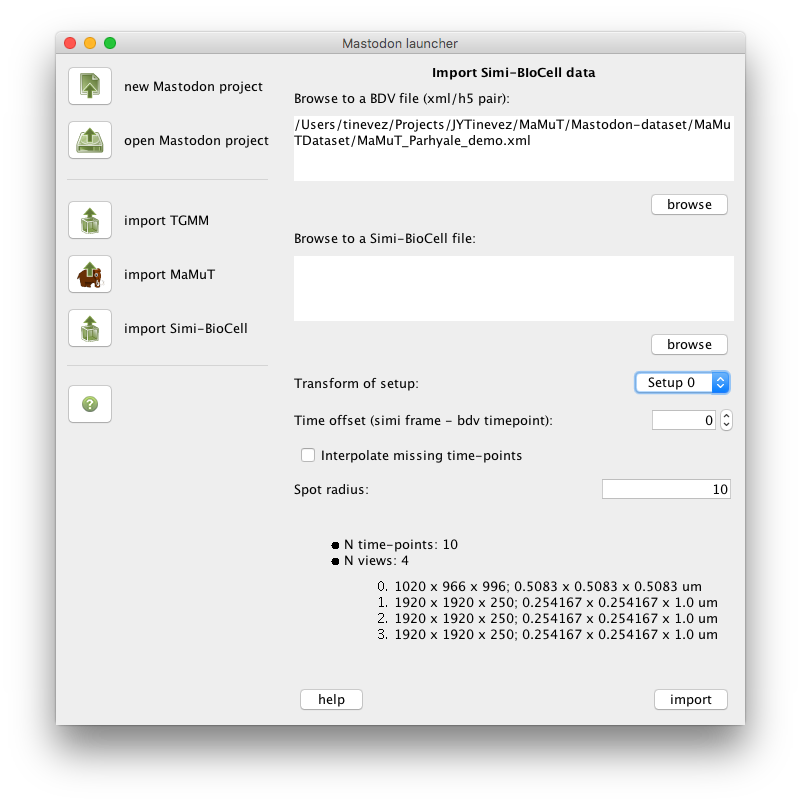

Here you can import Simi-BioCell files as a new Mastodon project.

Simi-BioCell files are normally shipped as a pair of sbc/sbd files, but we need only the sbd file for import. Both are text files. The sbc file starts with something like this:
;***** SIMI∞BioCell *****
;data file description
[BIOCELL]
FILETYPE=DATA
FILEVERSION=400
[DISC]
DISCNAME=Harddisk
and the sbd file starts with:
SIMI*BIOCELL
400
---
0
---
1 1
0
---
1 1 0 0 X
-6000 0 -1 -1
-5 0 -1 -1 -1 6776679
0
---
1 1 0 0 X?
0 0 -1 -1
0 0 -1 -1 -1 6776679
0
---
The BDV file format is made of a pair of xml/h5 files.
First browse to a BDV file by clicking on the first browse button or entering the full path to the XML file into the first text area. The information area at the bottom should display some information gathered from the BDV File.
The Transform of setup drop-down list should now be enabled and show the names of the views found in the BDV file. Select the view on which the Simi-BioCell analysis was run.
Then, browse to a SBD file, by clicking on the second browse button or entering the full path to the SBD file into the second text area.
The Time offset entry lets you specify whether there is an offset in time, regarding the frames of the image stored in the BDV file, and the time-points reported in the Simi-BioCell file. A time offset equals to 2 means that the data stored in the Simi-BioCell file at time-point 2 is to be displayed at the frame 0 of the image data.
The Interpolate missing time-points allow to create spots for missing frames union import. If for instance the Simi-BioCell data contains a spot in time-point 0 linked to a spot in time-point 5, spots will be added at frames 1, 2, 3 and 4, with their position linearly interpolated between spots at time-points 0 and 5.
The Spot radius field allows for specifying the imported spot radius, in the physical units specified in the BDV file.
Fi the image data appears not to be aligned with the lineage data, checks whether you specified the right view in the Transform of setup drop-down list.
Then checks whether there should be a time-offset to be entered in the Time offset field.